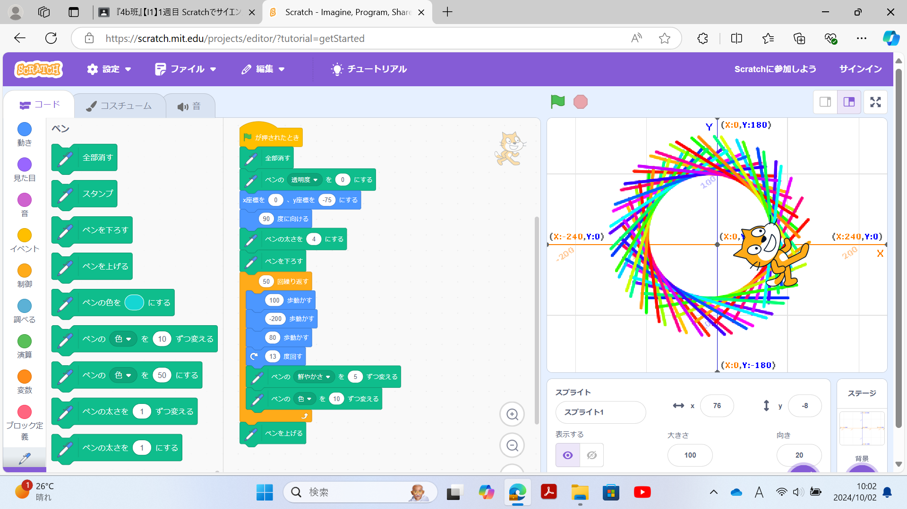
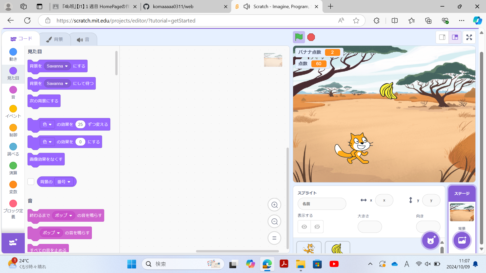

1週目のレポート ： 公大高専１年実習I-1
4b班25番 koma
第1週目
1-1 サイエンスアート

1.内容
スクラッチを使って線を書くプログラミングのやり方を学んだ。ペンの色や鮮やかさを変えてカラフルでポップな感じになるように工夫をした。 ブロックプログラミングという簡単なプログラミング行った。
2.感想
小学生のころからやっていたので非常にすらすら進めることができて経験を活かせているなと感じた。サイエンスアートは初めて 挑戦したのでどんな感じになるかわからないのでわくわくした。また、数値をいろいろ変えたりして試行錯誤するのがとても楽し かった。
1-2 ゲーム

1.内容
スクラッチを使って落ちてくるバナナを拾うゲームを作った。落ちてくるスピードによって点数が変わる工夫を加えた。また、操作 キャラクターの歩くスピードの微調整をした。スクラッチの基本的な仕組みや動かし方などを学んだ。
2.感想
バナナが落ちる速度で点数を変えるのが少し苦戦した。いつもゲームをプレイする側から作る側になってゲームを作る楽しさや作る 大変さを知られてよかった。バナナ以外にダミーを降らせて点数を減らすシステムや点数が二倍になるようなプログラムを組むのも面白いと考えた。
1-3 ホームページ作成
私のホームページ
1.内容
Git hubを使ってホームページの作り方の基礎を学んだ。写真の貼り方などを学んだ。
2.感想
ホームページの中身を見て複雑なコードがたくさん書いてあってホームページを作っている人がとてもすごいことをしているんだなと感じた。 このプログラミングを学んでいくと考えたらたくさん頑張らないといけない感じた。
各ページへのリンク
1週目のレポート
2週目のレポート
3週目のレポート
私のホームページ